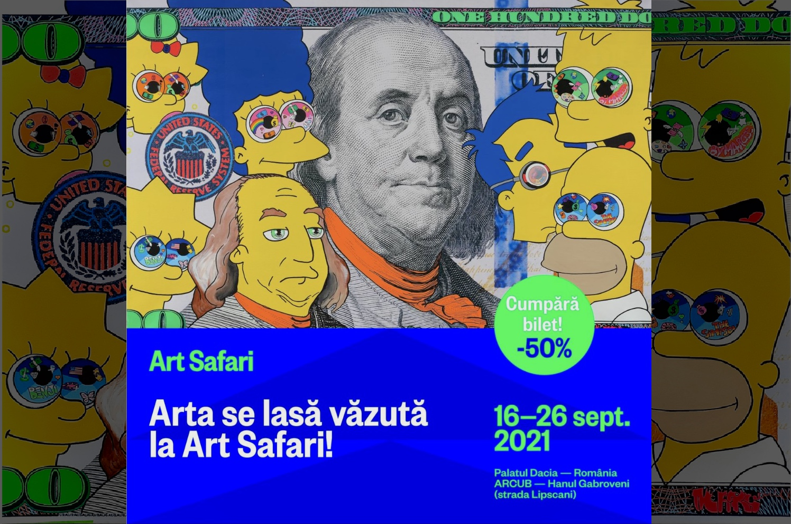

2023
The Lobby
Exhibition at The Lobby, Calea Victoriei 68-70,
Bucharest | opening 6 October; with Rotenberg-Uzunov
and Rădulescu Galleries
Contemporary artist working with pop culture and urban aesthetics. His paintings explore consumer culture through familiar characters, luxury-brand imagery and visual satire.

Exhibition at The Lobby, Calea Victoriei 68-70,
Bucharest | opening 6 October; with Rotenberg-Uzunov
and Rădulescu Galleries
Solo exhibition, Rotenberg-Uzunov Art Gallery,
Bucharest | 27 June - 13 July
Works presented by Rotenberg-Uzunov Art Gallery,
Romaero Băneasa, Bucharest | 20-21 May
Pop-up presentation of paintings and clothing
Rotenberg-Uzunov Art Gallery, Bucharest, Romania
Second participation; exhibited paintings, Bucharest, Romania.
Artwork featured in the edition's promotional campaign.
First participation; exhibited paintings, Bucharest, Romania.
Solo exhibition, Rotenberg-Uzunov Art Gallery
Bucharest, Romania | 17 July - 4 August
Works sold through Artmark and Lavacow auctions, Romania.
National University of Arts Bucharest, Romania